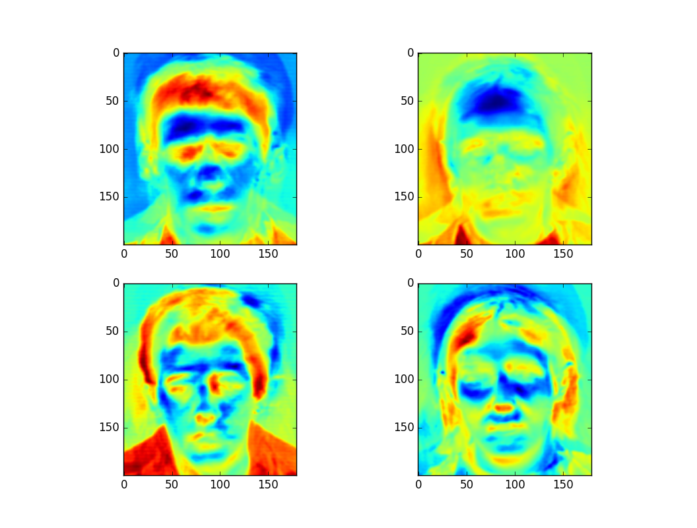
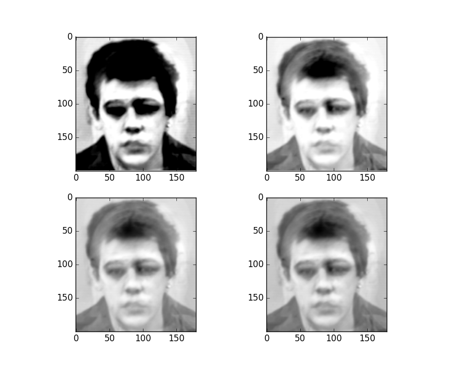
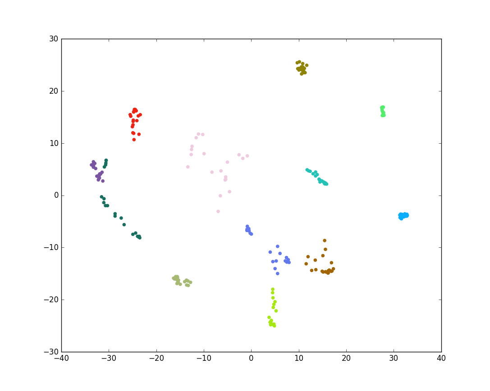
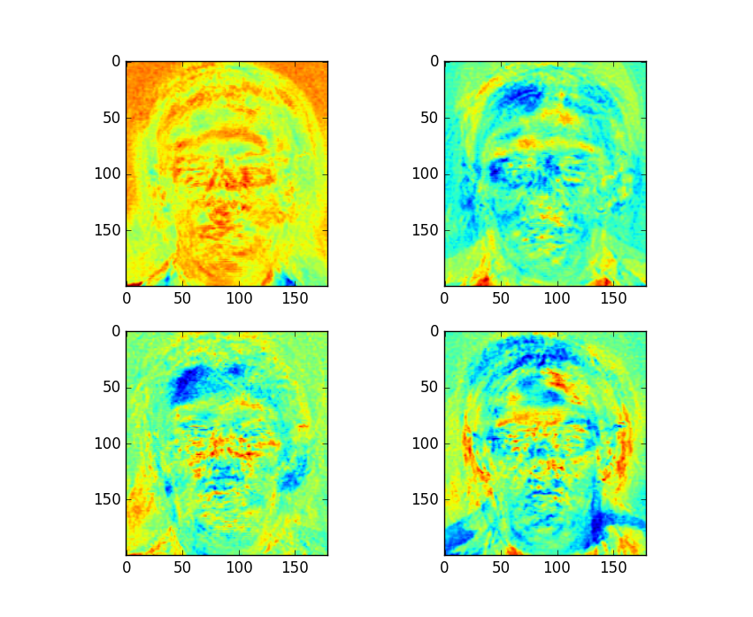
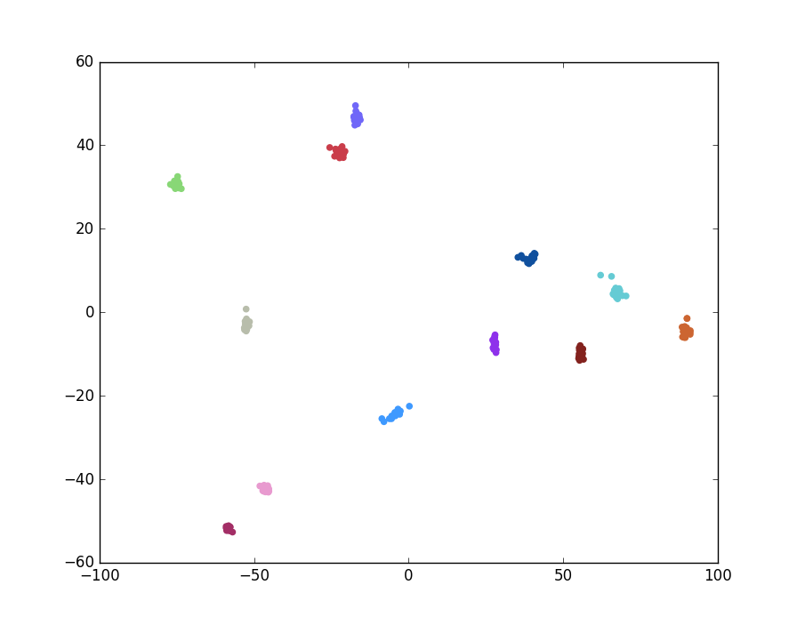

import numpy as np
import matplotlib.pyplot as plt
from sklearn import cross_validation
from sklearn.discriminant_analysis import LinearDiscriminantAnalysis
from sklearn.decomposition import PCA
from random import randint
import matplotlib.cm as cm
from skimage import io, color
import os
# %% Read image data
numImg = 20
numSbj = 12
A = np.zeros([numImg * numSbj, 180 * 200])
y = np.zeros([numImg * numSbj])
fPath = #Path to face94 database
j = numSbj
c = 0
for i in os.listdir(fPath):
if(j <= 0):
break
j -= 1
for f in os.listdir(fPath + '/' + i):
imgPath = fPath + '/' + i + '/' + f
A[c, :] = color.rgb2gray(io.imread(imgPath)).reshape([1, 180 * 200])
y[c] = j
c = c + 1plt.figure()
pca = PCA(n_components=4)
pca.fit(A)
for i in range(4):
ax = plt.subplot(2, 2, i + 1)
ax.imshow(pca.components_[i].reshape([200, 180]))
plt.show()
Figure 1: Plot of First Four Eigenfaces
Next, the data is approximated as a linear combination of the eigenfaces (principal components); only the weights of the eigenfaces are used to represent the data. Using more eigenfaces results in a better approximation. The following plot shows successively better approximations of an image using 1, 2, 3, and 4 eigenfaces (from top to bottom left to right).

Figure 2: Successive Approximation of Input Image
By preserving a small number of eigenfaces, the dimension of the data can be greatly reduced. Classification can then be performed in this lower-dimensional space. For example, a K Nearest Neighbors classifier could be used. The transformed image data can be computed and plotted as follows (2 eigenfaces are preserved for a 2D plot):
#Colors for distinct individuals
cols = ['#{:06x}'.format(randint(0, 0xffffff)) for i in range(numSbj)]
pltCol = [cols[int(k)] for k in y]
# %% Plot 2d PCA data
drA = pca.transform(A)
plt.figure()
plt.scatter(drA[:, 0], drA[:, 1], color=pltCol)
plt.show()
Figure 3: Plot of PCA Transformed Image Data
Notice in Figure 3 that the green and purple classes in the middle left overlap, however. This is not ideal. PCA finds a projection which maximizes the variability of all the data, but this does not take into account any class information. Linear discriminant analysis (LDA), on the other hand, maximizes the variability between each of the classes while also taking into account the variability within the classes themselves. For classification purposes, this is a better transformation. LDA based facial recognition is known as Fisherfaces.
\[\displaylines{\max\limits_{a}\frac{a^{T}\textbf{B}a}{a^{T}\textbf{W}a}}\ ,\]
where\[\displaylines{\textbf{W}=\sum\limits_{i=1}^{m}{\sum\limits_{j \in c_{i}}{(\textbf{x}_{j}-\boldsymbol{\mu}_{c_i})(\textbf{x}_{j}-\boldsymbol{\mu}_{c_i})^{T}}}}\ ,\]
is the within-class scatter matrix,\[\displaylines{\textbf{B}=\sum\limits_{i=1}^{m}{N_{i}(\boldsymbol{\mu}_{c_i}-\overline{\textbf{x}})(\boldsymbol{\mu}_{c_i}-\overline{\textbf{x}})^{T}}}\ ,\]
is the between-class scatter matrix, \(N_{i}\) is the number of samples belonging to class \(c_{i}\), \(m\) is the number of classes, and \(\overline{\textbf{x}}\) is the mean vector of all input vectors.# %%Compute Fisherfaces
lda = LinearDiscriminantAnalysis()
#Use cross validation to check performance
k_fold = cross_validation.KFold(len(A), 3, shuffle=True)
for (trn, tst) in k_fold:
#Use PCA to transform from dimension F to dimension N-m
pca = PCA(n_components=(len(trn) - numSbj))
pca.fit(A[trn])
#Compute LDA of reduced data
lda.fit(pca.transform(A[trn]), y[trn])
yHat = lda.predict(pca.transform(A[tst]))
#Compute classification error
outVal = accuracy_score(y[tst], yHat)
print('Score: ' + str(outVal))# %% Fit all data for plots
pca = PCA(n_components=(len(A) - numSbj))
pca.fit(A)
pcatA = pca.transform(A)
lda.fit(pcatA, y)
ldatA = lda.transform(pcatA)
#Plot fisherfaces
plt.figure()
for i in range(4):
ax = plt.subplot(2, 2, i + 1)
#Map from PCA space back to the original space (of images)
C1 = pca.inverse_transform(lda.scalings_[:, i])
C1.shape = [200, 180]
ax.imshow(C1)
plt.show()
Figure 4: First Four Fisherfaces of Dataset
# %% simplified LDA
k_fold = cross_validation.KFold(len(A), 3, shuffle=True)
for (trn, tst) in k_fold:
#Compute LDA of reduced data
lda.fit(A[trn], y[trn])
#Compute classification error
outVal = lda.score(A[tst], y[tst])
print('Score: ' + str(outVal))
Figure 5: Plot of LDA Transformed Images
In the above plot, different colors denote different classes (individuals). Indeed, the above method is preferable as it typically allows for perfect performance (100% accuracy) on this dataset.